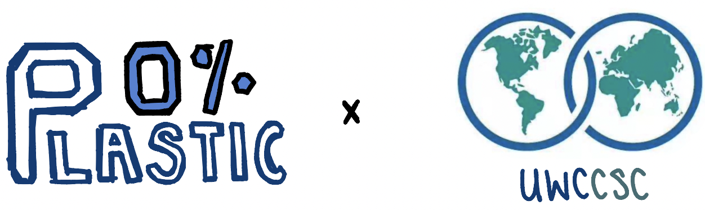
Plastic 0%: Designing Hope for the Ocean
I founded Plastic 0% during the pandemic with one conviction: technology and education must work together to protect our oceans.
"The sea was once an upside down sky."
Growing up in a coastal city, I watched the ocean shift from bright blue to dull brown, from clear water to floating waste. The sea that once felt alive became burdened by human convenience. As global plastic production surpasses 8 billion metric tons and over 100 million marine animals die each year, the problem no longer felt distant — it was personal.
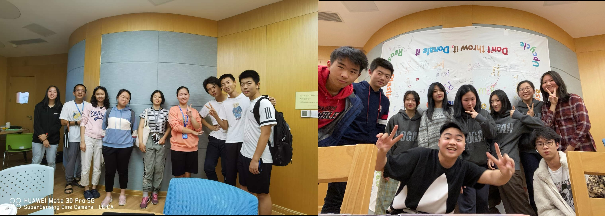
Introducing Skymirror: From Vision to First Prototype
The Skymirror is a streamlined, bullet-shaped ocean-cleanup robot designed to collect both floating and suspended plastics with maximum efficiency. Powered by solar energy and a water-jet propulsion system, it stores up to 80% of its internal volume as waste capacity while safely guiding marine life away using acoustic signals.
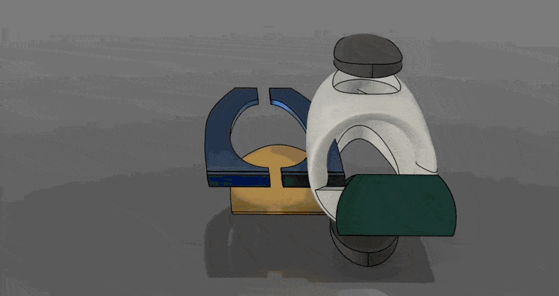
Role
Founder
Tech Team Leader
Machine Propulsion Designer
Timeline
2020-2023
@United World College, Changshu China
Team Members
Benson @Cornell
Mike @CMU
Neil @UCB
Estrella @Cornell
Kevin @Uchicago
Skills
Entrepreneurship
Mechanical Design
Company Analysis
Dealing with Failure & Self-Doubt
Awards
Conrad Challenge - National 2nd Place
Conrad Challenge - Most Innovative Team
Received Patent Approval
Skymirror Design Framework
To bring the Skymirror from concept to functional prototype, I followed a structured engineering workflow grounded in CAD modeling, hydrodynamic analysis, rapid prototyping, and iterative field testing.
1. CAD Engineering & Hydrodynamic Simulation
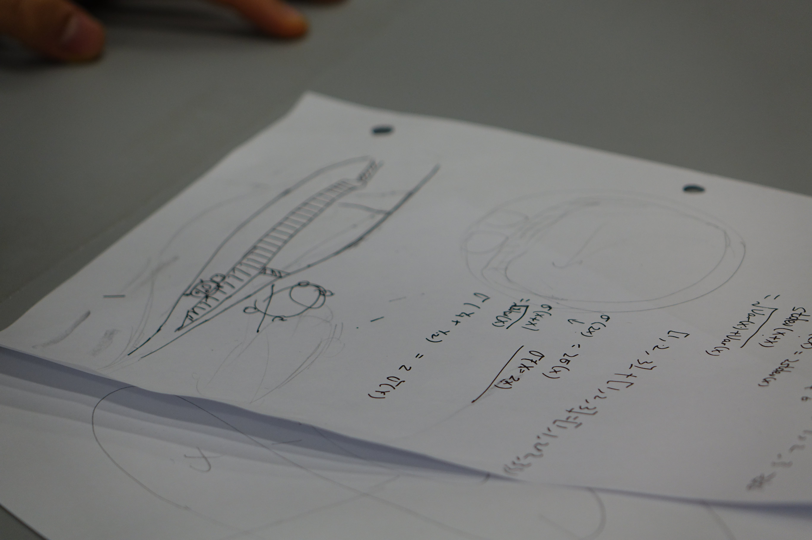
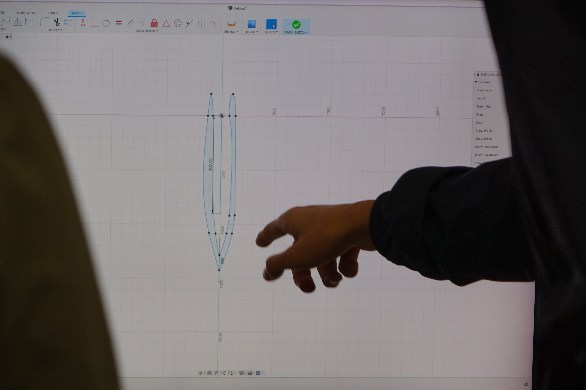
Our team began by designing the full model in Fusion 360, creating over 12 iterative drafts to optimize geometry, buoyancy distribution, and interior component layout. This phase ensured the propulsion, filtration, and collection modules fit seamlessly while maintaining a streamlined form factor.
2. High-Precision 3D Manufacturing
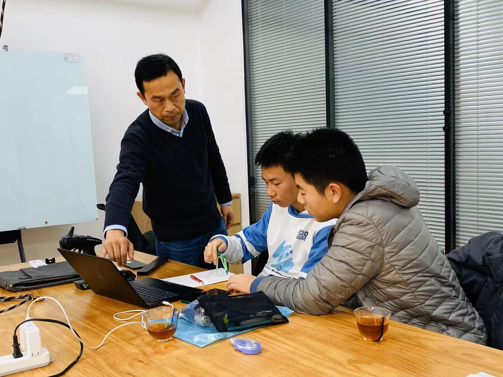
Once the final CAD was ready, I 3D-printed the prototype in CIT, China using dual-material printing (aluminum-plastic composite for the hull; reinforced polymer for internal trays).
Due to COVID campus lockdowns, the printed components were shipped to my home, where I converted my desk into a temporary assembly workstation.
3. Mechanical & Electronic Assembly
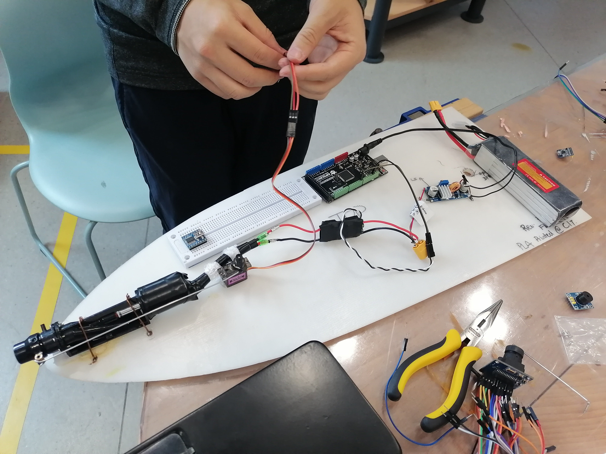
Our team manually assembled the prototype, carefully layering mechanical systems and electronics. Every joint and cable path followed clearance tolerances established in CAD to ensure structural rigidity and motion endurance. Mechanisms include:
- Propulsion system (water-jet style pump for forward thrust)
- One-way intake gate to capture debris and prevent backflow under current pressure
- Camera module for testing entry-detection logic
- Battery and ESC (electronic speed control) for power management
- Internal support frame to secure each module under motion and vibration
4. Surface Coating & Waterproofing
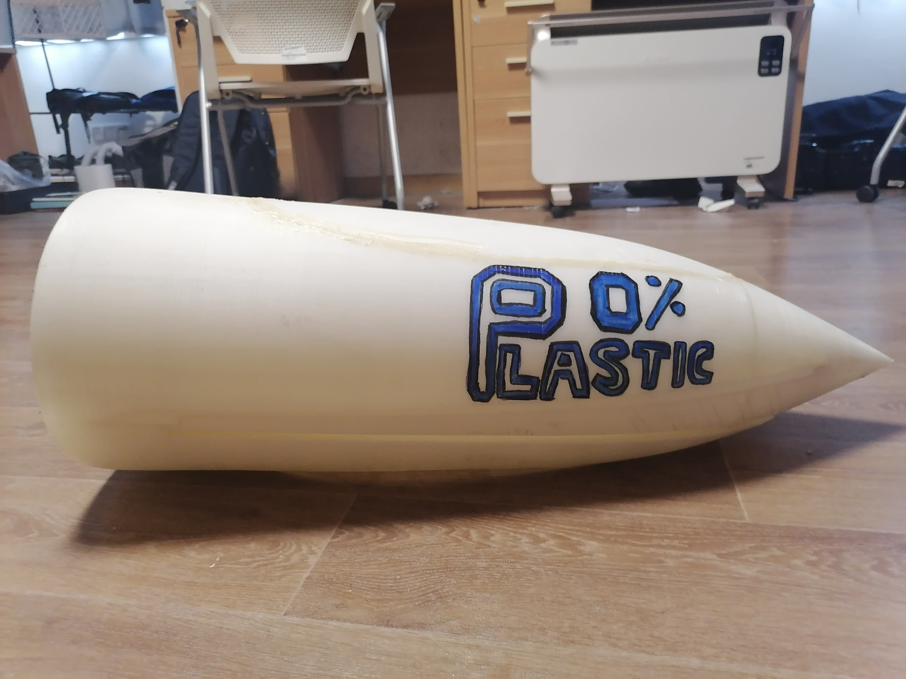
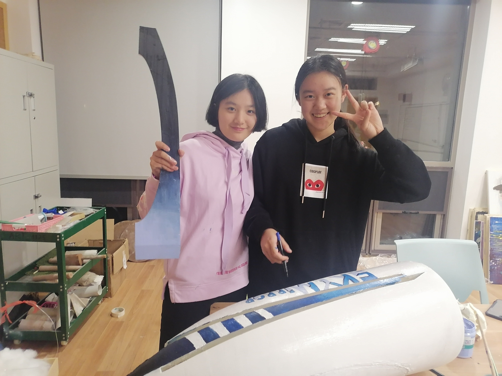
Our team applied a multi-layer waterproof spray coating over the printed hull. The paint provided both durability and realistic marine-equipment aesthetics. Some procedues include:
- Primer layer to seal micro-pores
- Water-resistant polyurethane coating
- Anti-corrosion finishing layer
5. Functional Testing & Iteration
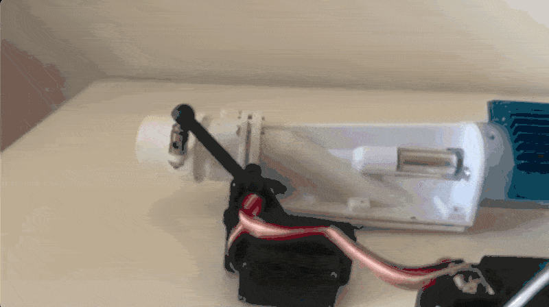
Finally, the Skymirror was tested in my school’s 25-meter swimming pool, where I evaluated:
- Stability under movement
- Water-jet propulsion thrust
- Float–suspend transitions
- One-way plastic intake gate behavior
- Buoyancy + weight balance calibration
The prototype demonstrated smooth surface traversal, stable body posture, and successful intake-capture cycles, which validates the core concept and leading to patent approval for the design.
Skymirror's Advantage: Precision Engineering, Real-World Impact
1. Maximum Ocean Coverage
Unlike surface-only skimmers, Skymirror is engineered to collect both floating plastic and suspended waste in shallow water layers — where microplastics and fragmented debris often gather. By adapting buoyancy and intake angle, the system maintains stability while sweeping a wider vertical zone, dramatically increasing recovery volume and extending its effective cleaning range across dynamic coastal and river environments.
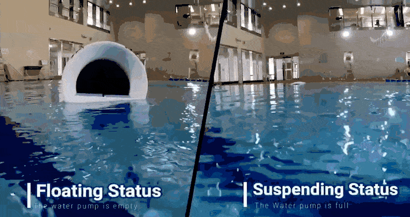
2. Maximized Collection Volume (4/5 Storage Capacity)
Unlike traditional cleanup vessels and booms — which allocate significant internal space to engines and support systems — Skymirror dedicates ~80% of its internal volume to plastic storage. The bullet-shaped hull and whale-shark-inspired intake design maximize usable space, allowing Skymirror to collect up to 1.8 tons in 30 minutes under continuous flow conditions. This means fewer retrieval trips, lower labor cost, and faster cleanup cycles.
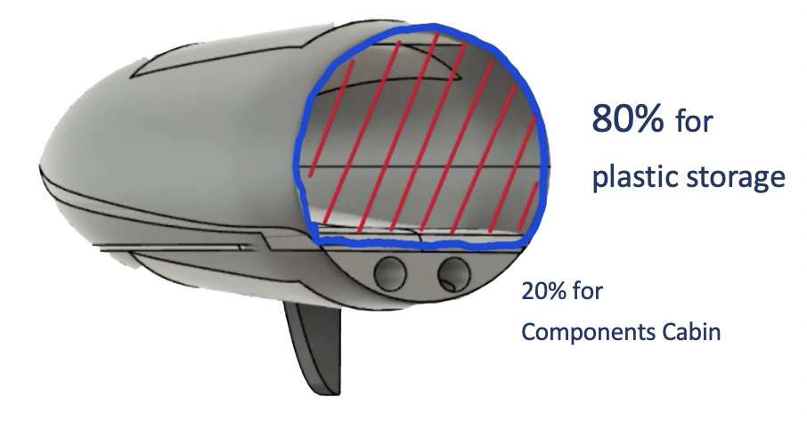
3. Streamlined Bullet Hull for Ocean Hydrodynamics
We took inspiration from submarine aerodynamics and marine biomimicry. This shape isn't aesthetic — it's physics, yielding higher travel efficiency and wider cleanup radius.
- Streamlined shell reduces drag → more efficient forward thrust
- Lower energy consumption than propeller-based systems
- Stable in rough currents thanks to low center of gravity and steel ballast system
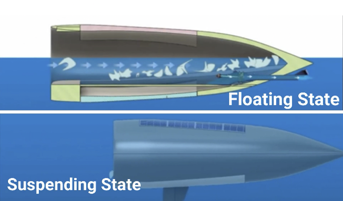
4. Waterjet Propulsion — No Entanglement, More Power
Instead of external propellers (which tangle with plastic & fishing nets), Skymirror uses an internal waterjet system. By accelerating filtered seawater through a constricted jet, we achieve strong forward thrust while simultaneously removing recirculated microplastics.
- No propeller jams
- Safer for marine life
- Lower maintenance & uninterrupted operations
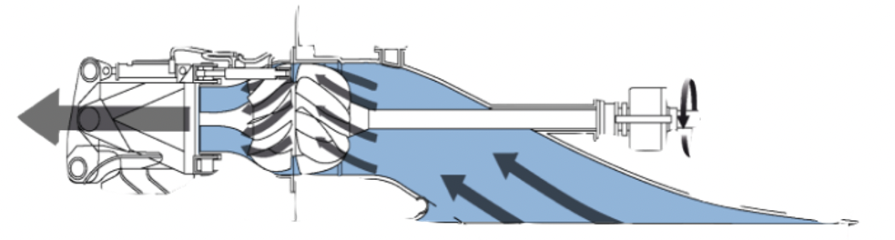
5. Filtration System & One Way Door
The dual-layer stainless steel filters (6.5 cm + 2 cm grid) ensure water exits clean, plastics down to 1.5 mm fragments are trapped, no micro-plastic recirculation. This positions Skymirror not just as a collector, but a pollution-prevention system.
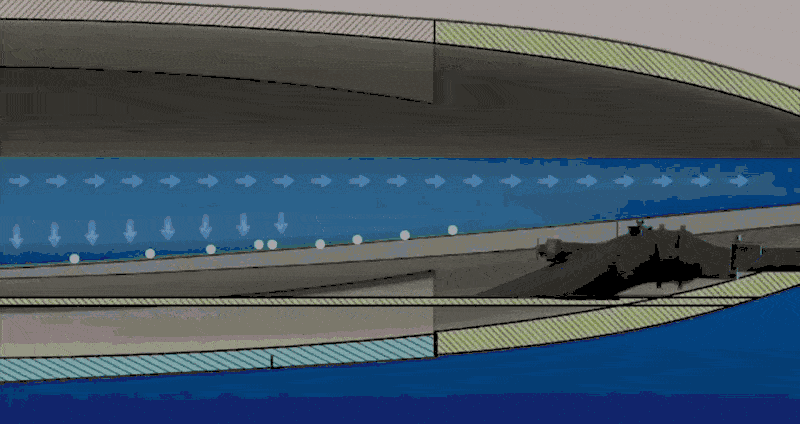
In addition, skymirror uses a reinforced one-way intake barrier that allows plastic to enter but prevents it from exiting once inside. This design ensures collected debris stays secured even in shifting waves and turbulence, enabling continuous operation without re-polluting the surrounding water.
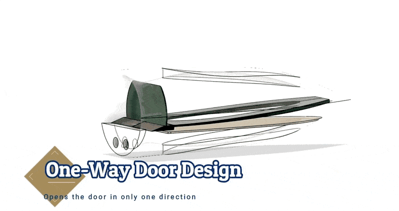
In a Nutshell: Skymirror is characterized by:
- Stores 4x more than standard harbor robots
- Runs multi-day missions with zero fuel dependency
- Operates in currents, lakes, coastal zones, and rivers
- Protects marine life while recovering microplastics
- Cuts labor cost, energy use, and maintenance downtime
Turning Obstacles Into Momentum
Skymirror was born in chaos, shaped by kindness, and powered by the belief that even in a fractured world, young people can still build something that heals it. This is a letter to my team, to my teachers, and to everyone who stood beside us. Thank you for choosing belief over certainty, patience over convenience, and hope over fear. We turned a small idea in a locked-down dorm into a real machine built for the ocean. We engineered possibility.
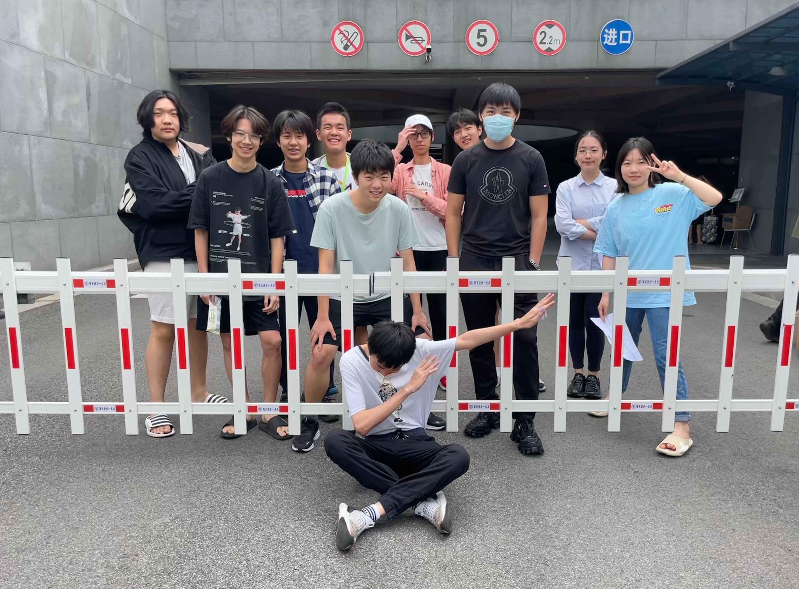
Building Skymirror wasn’t just an engineering challenge, it was a test of patience, stubborn hope, and belief in a mission bigger than ourselves. When COVID lockdowns hit, our ocean-cleanup startup suddenly found ourselves with no ocean, no access to labs, and no way to meet in person. There were days it felt ridiculous: five teenagers trying to tackle marine pollution while the world shut down outside our dorm windows.
But we refused to stop.
We moved our prototype testing to the school swimming pool, pushing a metal bullet-shaped machine through chlorinated water while wearing disposable gloves and half-fogged masks. It wasn’t glamorous, but that pool became our ocean, and those late nights became proof that innovation doesn’t wait for perfect conditions.
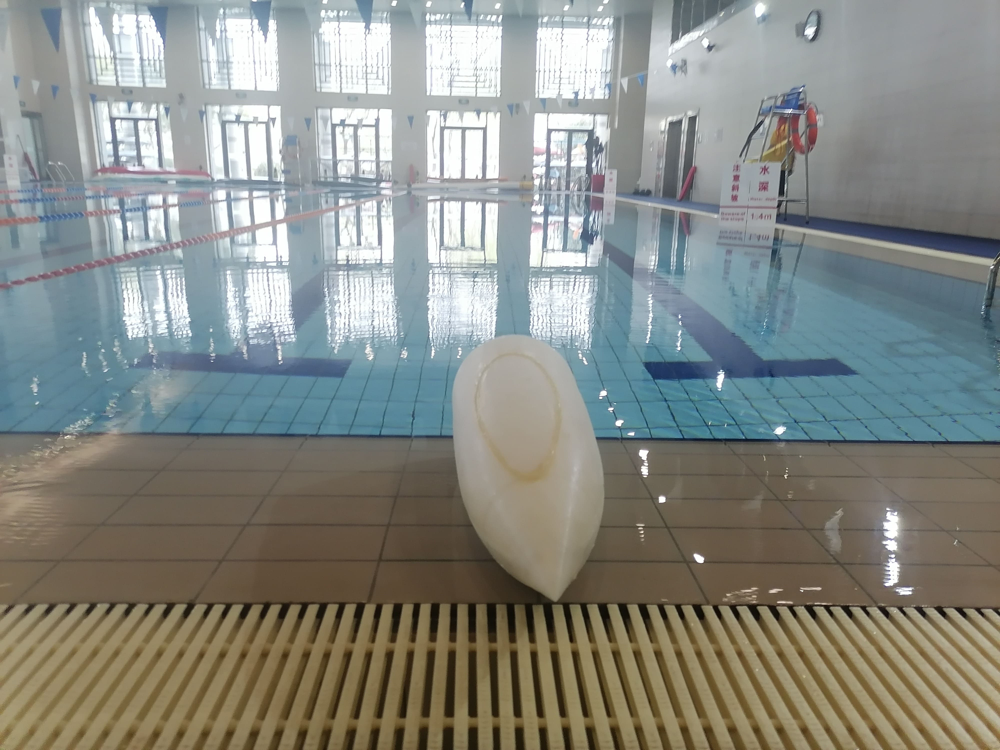
And we never built this alone.
We are forever grateful to Vice Principal Shirla, who believed in us when this was nothing more than scribbles and ambition; to the Design & Technology office, who treated our idea like it mattered; and especially to Teacher Jun, Pranjal, and Lillian, who offered tools, time, advice, and patience when most people would have said, “Try again after the pandemic.”
Their support taught us the power of community and courage in moments of uncertainty.
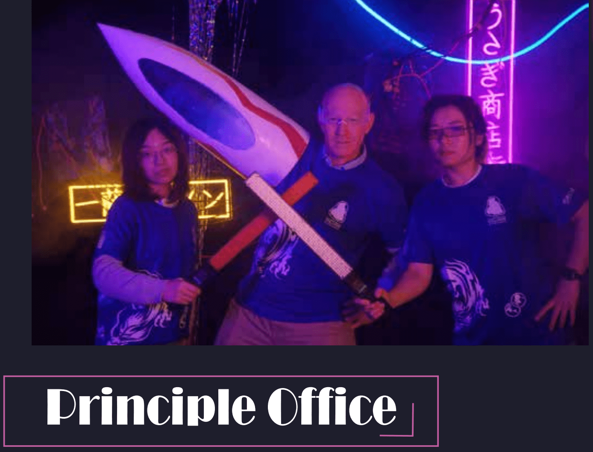
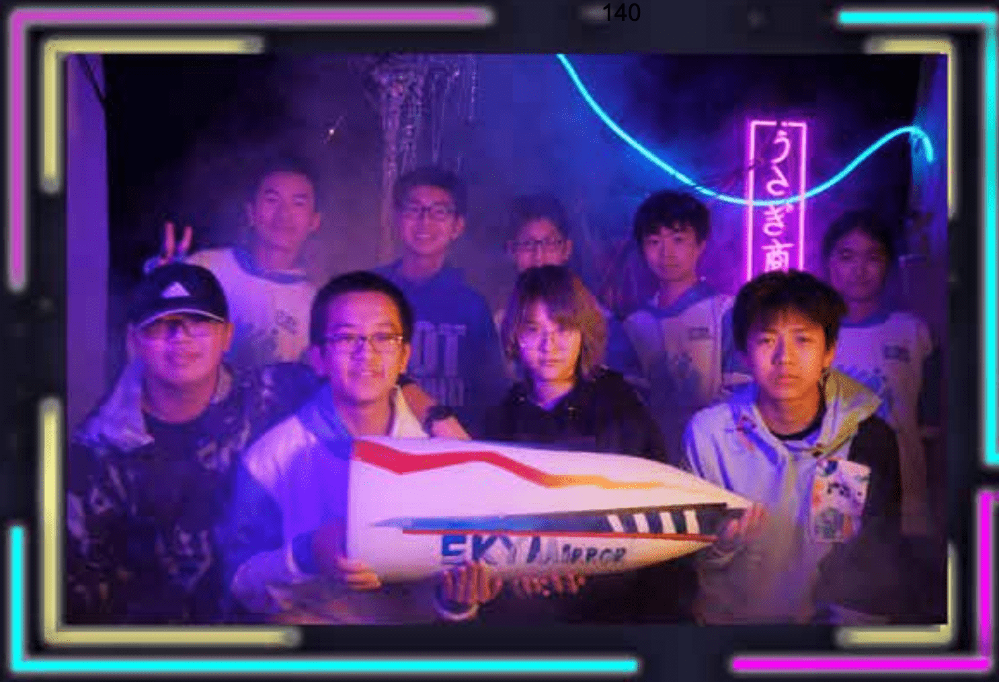